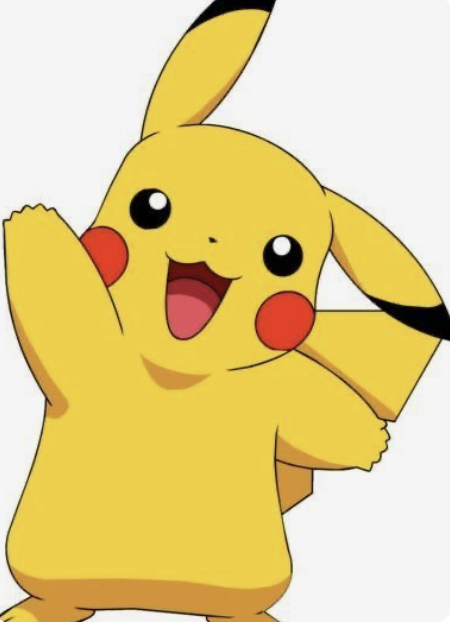
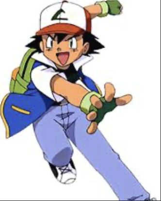
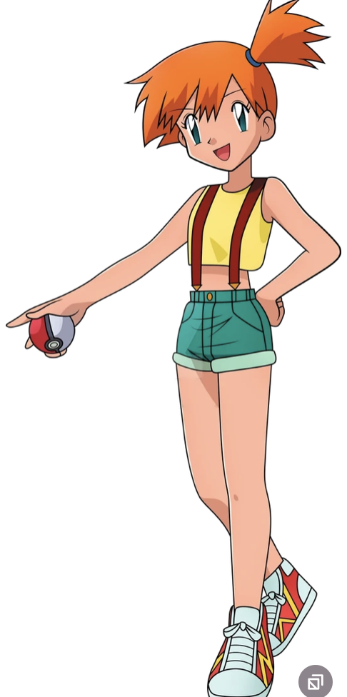
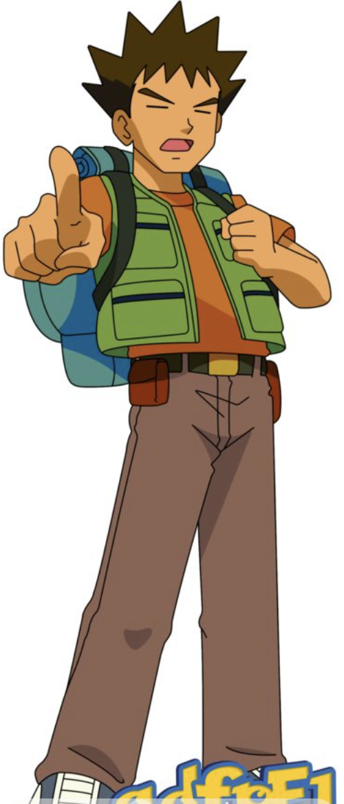

Introduction to Pokémon Characters

Pikachu is an Electric-type Pokémon and the most famous character in the Pokémon franchise. It is the first Pokémon that Ash receives from Professor Oak. Pikachu can store electricity in its cheeks and release it during battles. Its most famous attack is Thunderbolt, which is very powerful. Pikachu shares a very strong friendship with Ash and always protects him. Unlike most Pokémon, Pikachu prefers to stay outside its Poké Ball. It has helped Ash win many important battles against strong opponents. Pikachu is brave, loyal, and always ready to fight for its friends. Because of its cute appearance and personality, it became the mascot of Pokémon. Fans all over the world love Pikachu very much.

Ash Ketchum is the main protagonist of the Pokémon anime series. He is a young Pokémon trainer from Pallet Town whose biggest dream is to become a Pokémon Master. Ash is known for his determination and strong will, as he never gives up even after losing many battles. His first and most trusted partner is Pikachu, and they share a very deep bond. Ash travels to many different regions to catch new Pokémon and compete in Pokémon League tournaments. During his journey he meets many friends and learns important lessons about teamwork and friendship. Ash is always ready to help people and Pokémon in trouble. He believes in trusting his Pokémon and treating them like family. Over time he becomes a stronger and smarter trainer. Eventually, Ash achieves his dream by becoming a world champion in the Pokémon series.

Misty is one of the first companions of Ash in the Pokémon anime. She is the Gym Leader of Cerulean City and specializes in Water-type Pokémon. Misty has a strong personality and often gets angry quickly, especially when Ash makes mistakes. Despite arguing with him many times, she is actually a very loyal and caring friend. Misty loves Water-type Pokémon and has great knowledge about them. Some of her most famous Pokémon are Psyduck, Staryu, and Togepi. She travels with Ash and Brock for a long time during their adventures. Misty always supports her friends in difficult situations. She is brave and never backs down from a challenge. Misty is one of the most loved female characters in the Pokémon series.

Brock is another important companion of Ash in the Pokémon anime. He is the Gym Leader of Pewter City and specializes in Rock-type Pokémon. Brock is calm, responsible, and acts like the older brother of the group. He is very good at cooking and usually prepares food for everyone during their travels. Brock also takes care of Pokémon when they are injured or tired. His most famous Pokémon include Onix and Geodude. Brock dreams of becoming a great Pokémon doctor in the future. He often gives wise advice to Ash and Misty during their journey. Brock is also known for his funny habit of falling in love with every beautiful girl he meets. He is a loyal and supportive friend who helps Ash on many adventures.

Team Rocket is a famous villain group in the Pokémon anime series. The most well-known members of Team Rocket are Jessie, James, and Meowth. They work for the powerful criminal organization called Team Rocket. Their main goal is to steal rare and strong Pokémon. In the anime, they are always trying to capture Ash’s Pikachu. Jessie is confident, dramatic, and loves fashion and attention. James is more kind-hearted and sometimes questions their evil plans. Meowth is a talking Pokémon who acts as the brains of the group. The trio often makes funny plans to catch Pokémon but usually fails. After their plans fail, they are usually sent flying into the sky. Their famous line is “Team Rocket is blasting off again!”. Even though they are villains, they are very funny and entertaining. They travel in a hot air balloon shaped like Meowth. Sometimes they also show a soft side and help others. Team Rocket has become one of the most iconic villain groups in anime. Many fans remember them for their humor and dramatic introductions. They always appear with a stylish and dramatic motto before their plans. Their teamwork and funny arguments make them very entertaining. Even though they lose many times, they never stop chasing their goals. Team Rocket’s adventures add comedy and excitement to the Pokémon series.